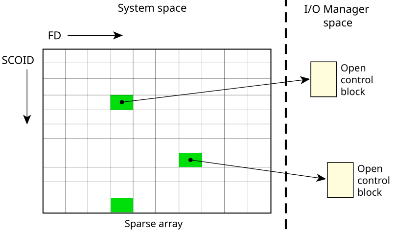

Once an I/O resource has been opened, a different namespace comes into play. The open() returns an integer referred to as a file descriptor (FD), which is used to direct all further I/O requests to that resource manager.
Unlike the pathname space, the file descriptor namespace is completely local to each process. The resource manager uses the combination of a SCOID (server connection ID) and FD (file descriptor/connection ID) to identify the control structure associated with the previous open() call. This structure is referred to as an open control block (OCB) and is contained within the resource manager.
